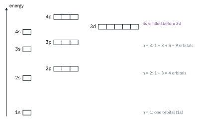
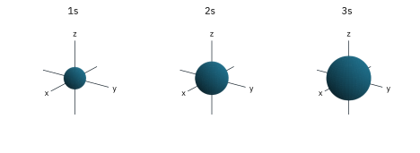
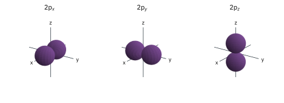
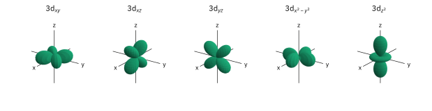
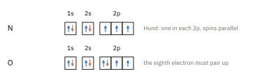
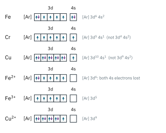
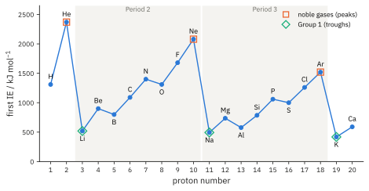
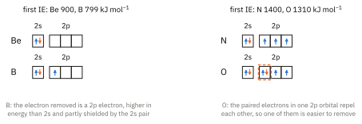
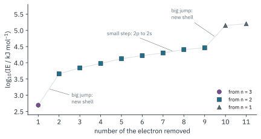

ATOMIC STRUCTURE 2
Topic 1 · Atomic Structure Part 2
On this page
In Part 1 the electrons were just "in the space around the nucleus". Now we need to be much more specific, because where the electrons are, and how tightly they are held, decides almost all of chemistry: which ions form, how atoms bond, and why the Periodic Table has the shape it has.
Key terms
| Term | Meaning |
|---|---|
| principal quantum number, n | the number of the shell (energy level): n = 1, 2, 3, 4 …; the higher n, the further the electrons are from the nucleus on average and the higher their energy |
| subshell | a group of orbitals of the same type within a shell: s, p or d |
| orbital | a region of space around the nucleus that can hold at most two electrons, of opposite spin |
| electronic configuration | the arrangement of the electrons of an atom or ion in shells, subshells and orbitals |
| first ionisation energy | the energy required to remove one mole of electrons from one mole of gaseous atoms to form one mole of gaseous singly charged positive ions |
| shielding | the reduction in the attraction of the nucleus for an outer electron caused by repulsion from the electrons in inner shells |
Shells, subshells and orbitals
The electrons in an atom are arranged in shells (energy levels), numbered by the principal quantum number n. Each shell is divided into subshells, labelled s, p and d (and f, which you don't need), and each subshell is made of one or more orbitals.
| Shell, n | Subshells | Orbitals | Maximum electrons |
|---|---|---|---|
| 1 | 1s | 1 | 2 |
| 2 | 2s, 2p | 1 + 3 = 4 | 2 + 6 = 8 |
| 3 | 3s, 3p, 3d | 1 + 3 + 5 = 9 | 2 + 6 + 10 = 18 |
| 4 | 4s, 4p, (4d, 4f) | 1 + 3 (+ 5 + 7) | 2 + 6 (+ 10 + 14) = 32 |
The orbitals in a subshell all have the same energy (the three 2p orbitals are identical except for the direction they point in). The order of the subshells in energy, for the atoms up to krypton, is:
1s < 2s < 2p < 3s < 3p < 4s < 3d < 4p

Two things in Fig 1 catch people out:
- Within a shell, s < p < d. The 2s is lower than the 2p, the 3s lower than the 3p, and so on.
- The 4s is lower than the 3d, so it fills first (potassium is [Ar] 4s1, not [Ar] 3d1). But the 3d and 4s are very close in energy, and once the 3d holds electrons, the 4s is the higher of the two. That is why, when a transition metal forms an ion, the 4s electrons are lost first (see below).
The shapes of orbitals
An orbital is not a path the electron follows. It is the region of space where there is a high chance of finding the electron. The shapes below are drawn as boundary surfaces: the electron spends most of its time inside them. (You do not need the wave functions they come from.)
s orbitals
Every s orbital is spherical, centred on the nucleus. The higher the shell, the bigger the sphere: 2s is larger than 1s, and 3s larger still (Fig 2).

p orbitals
A p orbital has two lobes on opposite sides of the nucleus, like a dumbbell, with zero chance of finding the electron at the nucleus itself. The three p orbitals of a subshell point along the three axes at 90° to each other, so they are called px, py and pz (Fig 3). Again, 3p orbitals have the same shape as 2p but are larger.

d orbitals
There are five d orbitals (Fig 4). Four of them have four lobes (a "cloverleaf"):
- 3dxy, 3dxz and 3dyz have their lobes between the axes, in the xy, xz and yz planes;
- 3dx²−y² has its lobes along the x and y axes.
The fifth, 3dz², is different: two lobes along the z axis with a ring (doughnut) around the middle, in the xy plane.

The d-orbital shapes come back in Topic 13, where the way they point relative to the ligands explains the colours of transition metal complexes. For now, be able to sketch and label them.
Electronic configuration
To write the electronic configuration of an atom, feed its electrons into the orbitals following three rules:
- Aufbau principle: fill the orbitals in order of increasing energy, lowest first (1s, 2s, 2p, 3s, 3p, 4s, 3d, 4p).
- Pauli exclusion principle: each orbital holds a maximum of two electrons, and they must have opposite spins (drawn ↑↓).
- Hund's rule: within a subshell, the electrons occupy the orbitals singly, with parallel spins, before any pairing starts. (Electrons repel each other, so they spread out before they are forced to share.)
The configuration is written as subshells with the number of electrons as a superscript, e.g. nitrogen (7 electrons) is 1s2 2s2 2p3. The electrons-in-boxes diagram shows each orbital as a box (Fig 5).

Here are some key configurations from hydrogen to krypton, worked out with those rules. Learn to generate them, not memorise them:
| Element | Z | Electronic configuration |
|---|---|---|
| H | 1 | 1s1 |
| He | 2 | 1s2 |
| Li | 3 | 1s2 2s1 |
| C | 6 | 1s2 2s2 2p2 |
| N | 7 | 1s2 2s2 2p3 |
| O | 8 | 1s2 2s2 2p4 |
| Ne | 10 | 1s2 2s2 2p6 |
| Na | 11 | 1s2 2s2 2p6 3s1, or [Ne] 3s1 |
| Cl | 17 | 1s2 2s2 2p6 3s2 3p5, or [Ne] 3s2 3p5 |
| Ar | 18 | 1s2 2s2 2p6 3s2 3p6 |
| K | 19 | 1s2 2s2 2p6 3s2 3p6 4s1, or [Ar] 4s1 |
| Ca | 20 | [Ar] 4s2 |
| Fe | 26 | 1s2 2s2 2p6 3s2 3p6 3d6 4s2, or [Ar] 3d6 4s2 |
| Zn | 30 | [Ar] 3d10 4s2 |
| Ga | 31 | [Ar] 3d10 4s2 4p1 |
| Br | 35 | [Ar] 3d10 4s2 4p5 |
| Kr | 36 | [Ar] 3d10 4s2 4p6 |
Two conventions to notice:
- [Ne], [Ar] shorthand: the configuration of the previous noble gas can be written as its symbol in square brackets. Use the full version when a question asks for the "full" configuration.
- Write the 3d before the 4s, i.e. in order of shell number: Fe is …3p6 3d6 4s2. The 4s still fills first; this is only the order of writing. Grouping by shell makes it obvious which electrons are outermost (the 4s), and those are the ones lost first.
The two exceptions: chromium and copper
Follow the rules blindly and you would get Cr = [Ar] 3d4 4s2 and Cu = [Ar] 3d9 4s2. The real configurations are:
These are the only two exceptions up to krypton, and you must know them.1
Configurations of ions
For a negative ion, add the extra electrons to the next available orbitals: O2− (8 + 2 = 10 electrons) is 1s2 2s2 2p6, and Cl− is [Ne] 3s2 3p6. Both are now isoelectronic with a noble gas.
For a positive ion, remove electrons from the outermost shell first. For Period 2 and 3 elements that is obvious (Na+ is 1s2 2s2 2p6), but for the transition metals it means the 4s electrons go before the 3d (Fig 6):
| Species | Electrons | Configuration | Comment |
|---|---|---|---|
| Fe | 26 | [Ar] 3d6 4s2 | |
| Fe2+ | 24 | [Ar] 3d6 | both 4s electrons lost, not two 3d |
| Fe3+ | 23 | [Ar] 3d5 | then one 3d electron |
| Cu | 29 | [Ar] 3d10 4s1 | exception |
| Cu+ | 28 | [Ar] 3d10 | |
| Cu2+ | 27 | [Ar] 3d9 | |
| Cr | 24 | [Ar] 3d5 4s1 | exception |
| Cr3+ | 21 | [Ar] 3d3 | |
| Mn2+ | 23 | [Ar] 3d5 | |
| Zn2+ | 28 | [Ar] 3d10 |

Ionisation energy
Now we can ask the question that tests all of this: how hard is it to pull an electron off an atom?
X(g) → X+(g) + e− e.g. Na(g) → Na+(g) + e− first IE = +494 kJ mol−1
The second ionisation energy removes the next electron from the singly charged ion, and so on:
X+(g) → X2+(g) + e− (second IE)
X(n−1)+(g) → Xn+(g) + e− (nth IE)
Three points that examiners check: the species must be gaseous (state symbols matter), it is one mole of electrons, and ionisation energies are always positive (endothermic): you always have to put energy in to pull an electron away from a nucleus that attracts it. The values in these notes are from the Data Booklet, which lists the first four IEs of selected elements.
Factors that affect ionisation energy
Think of it as a tug-of-war between the nucleus pulling the electron in and everything that weakens that pull. The ionisation energy is large when the outer electron is held tightly. Three main factors:
- (1) Nuclear charge. More protons, a stronger attraction for the electrons, a higher IE.
- (2) Distance from the nucleus. An electron in a higher shell (larger n, larger atomic radius) is further from the nucleus, so it is attracted less strongly, and the IE is lower.
- (3) Shielding by inner electrons. Electrons in inner shells repel the outer electron and cancel out part of the nuclear charge. More inner shells, more shielding, a lower IE. (Electrons in the same shell shield each other only poorly.)
Two finer points explain the "dips" you will see in the trends:
- (4) Type of subshell. A p electron is higher in energy than an s electron of the same shell, and is partly shielded by the s electrons, so it is easier to remove.
- (5) Repulsion between paired electrons. Two electrons in the same orbital repel each other, so removing one of a pair is easier than removing an unpaired electron.
Trends in first ionisation energy

Down a group: decreases
Going down Group 1 or Group 2, the first IE decreases (Data Booklet values, kJ mol−1):
| Period 2 | Period 3 | Period 4 | Period 5 | Period 6 | |
|---|---|---|---|---|---|
| Group 1, first IE | Li 519 | Na 494 | K 418 | Rb 403 | Cs 376 |
| Group 2, first IE | Be 900 | Mg 736 | Ca 590 | Sr 548 | Ba 502 |
| Group 2, atomic radius / nm | Be 0.112 | Mg 0.160 | Ca 0.197 | Sr 0.215 | Ba 0.217 |
Each step down adds a shell, so the outer electron is further from the nucleus and there are more inner shells shielding it. The nuclear charge does increase, but the increase in distance and shielding outweighs it, so the outer electron is held less strongly.
Across a period: increases, with two dips
Across Period 2 or 3, the general trend is an increase. The nuclear charge rises by one each step, the electrons are being added to the same shell so the distance is roughly the same (the atoms actually get smaller), and the shielding by the inner shells stays about the same. So the outer electrons are held more and more tightly, and the noble gas at the end has the highest first IE of its period.
But the increase is not smooth (Fig 7). There are two dips in each period (Fig 8):
- Group 2 → Group 13 (Be 900 → B 799; Mg 736 → Al 577). In B, the electron removed is a 2p electron; in Be it is a 2s electron. The 2p electron is higher in energy and is partly shielded by the 2s electrons, so it is easier to remove, despite boron's larger nuclear charge. Same for Al (3p) versus Mg (3s).
- Group 15 → Group 16 (N 1400 → O 1310; P 1060 → S 1000). N has three 2p electrons, one in each orbital (Hund's rule). In O, the fourth 2p electron has to pair up in an orbital that already holds one, and the repulsion between the two paired electrons makes one of them easier to remove. Same for S versus P.

From the end of one period to the start of the next: a big drop
Ne 2080 → Na 494, and Ar 1520 → K 418. The outer electron of Na is in a new shell (3s), further from the nucleus and shielded by two full inner shells, so even with one more proton it is far easier to remove. Each period starts at a low point with a Group 1 metal and climbs to a peak at the noble gas.
(Further example. For the transition elements Sc to Zn, the first IEs change only a little, because the electrons are being added to an inner 3d subshell while the 4s electrons that are removed see roughly the same pull. You will see this in the lab; it comes back in Topic 13.)
Successive ionisation energies
Keep removing electrons from the same atom and record each ionisation energy. Two things happen:
- Each successive IE is larger than the one before, because each electron is being removed from an ion that is more and more positive (the same nuclear charge holds fewer electrons, so each is held more tightly).
- There are big jumps whenever the next electron has to come from a shell closer to the nucleus.
Sodium shows this perfectly (Fig 9). Because the values range from about 500 to over 150 000 kJ mol−1, we plot log10(IE).

Read the graph from the left:
- The first electron is easy to remove (494 kJ mol−1), then there is a big jump to the second (4560 kJ mol−1). So there is one electron in the outer shell: sodium is in Group 1.
- Electrons 2 to 9 rise steadily, then there is another big jump to the 10th. So there are eight electrons in the second shell. Look closely and there is a small step between the 7th and 8th: the first six come from 2p, the next two from 2s, which is lower in energy.
- The last two, from the 1s right next to the nucleus, are enormous.
So the pattern 1 | 8 | 2 is the electronic configuration 2, 8, 1 read backwards: 1s2 2s2 2p6 3s1.
Worked example
The first five ionisation energies of element X are 577, 1820, 2740, 11 600 and 14 842 kJ mol−1 (Data Booklet values for the first four; literature value for the fifth). Which group is X in? Suggest its identity if it is in Period 3.
(To answer, look at the ratio of each IE to the one before it, and find the jump that is out of line.)
| 1st → 2nd | 2nd → 3rd | 3rd → 4th | 4th → 5th | |
|---|---|---|---|---|
| ratio | 1820 / 577 = 3.2 | 2740 / 1820 = 1.5 | 11 600 / 2740 = 4.2 | 14 842 / 11 600 = 1.3 |
The largest jump is between the 3rd and 4th IE, so three electrons are in the outer shell: X is in Group 13, with outer-shell configuration ns2 np1. In Period 3, X is aluminium, [Ne] 3s2 3p1.
(The 1st → 2nd ratio is also quite large, because the first electron comes from 3p and the second from 3s, which is lower in energy. That is a change of subshell, not of shell, and the 3rd → 4th jump is clearly bigger. Look for the biggest jump among the first few values; for Groups 13 to 18, the largest ratio over a full set of data is usually the jump into the 1s shell, which tells you nothing about the group.)
Successive IEs also tell you about ions. Mg (736, 1450, 7740 …) loses two electrons fairly easily but the third would cost a huge amount more, which is why magnesium forms Mg2+ and never Mg3+.
Summary
- Shells n = 1, 2, 3 …; subshells s (1 orbital), p (3), d (5); 2 electrons per orbital; 2n2 per shell.
- Energy order: 1s < 2s < 2p < 3s < 3p < 4s < 3d < 4p.
- s spherical; p two lobes along an axis; d four lobes (between the axes for dxy, dxz, dyz; along the axes for dx²−y²), and dz² two lobes with a ring.
- Fill by aufbau, Pauli and Hund. Write 3d before 4s. Cr = [Ar] 3d5 4s1, Cu = [Ar] 3d10 4s1. Positive ions lose 4s before 3d.
- First IE: X(g) → X+(g) + e−. Higher with greater nuclear charge; lower with greater distance and more shielding.
- Down a group IE falls; across a period it rises, with dips at Group 13 (p electron) and Group 16 (paired electrons).
- Successive IEs: the first big jump gives the number of outer electrons, and so the group.
Additional information
- Beyond krypton there are more exceptions (for example in the 4d and 5d series), which you do not need. ↩